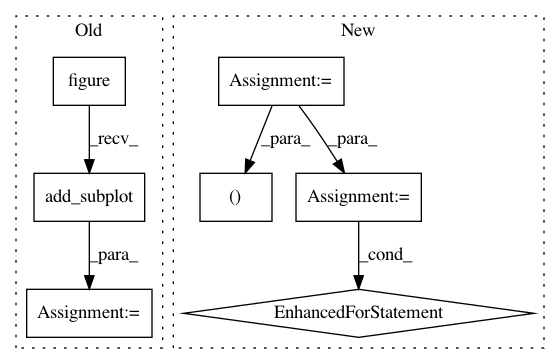

98ab2a07920610dae862d95363243572a84ea2c7,lib/matplotlib/tests/test_patches.py,,test_large_arc,#,505
Before Change
@image_comparison(["large_arc.svg"], style="mpl20")
def test_large_arc():
ax = plt.figure().add_subplot()
ax.set_axis_off()
// A large arc that crosses the axes view limits.
ax.add_patch(mpatches.Arc((-100, 0), 201, 201))
After Change
@image_comparison(["large_arc.svg"], style="mpl20")
def test_large_arc():
fig, (ax1, ax2) = plt.subplots(1, 2)
x = 210
y = -2115
diameter = 4261
for ax in [ax1, ax2]:
a = mpatches.Arc((x, y), diameter, diameter, lw=2, color="k")
ax.add_patch(a)
ax.set_axis_off()
ax.set_aspect("equal")
// force the high accuracy case
ax1.set_xlim(7, 8)
ax1.set_ylim(5, 6)
// force the low accuracy case
In pattern: SUPERPATTERN
Frequency: 3
Non-data size: 7
Instances
Project Name: matplotlib/matplotlib
Commit Name: 98ab2a07920610dae862d95363243572a84ea2c7
Time: 2020-06-16
Author: tcaswell@gmail.com
File Name: lib/matplotlib/tests/test_patches.py
Class Name:
Method Name: test_large_arc
Project Name: matplotlib/matplotlib
Commit Name: d67550cee52588a9ff3cff49fbc45b0d878bca9a
Time: 2020-06-16
Author: tcaswell@gmail.com
File Name: lib/matplotlib/tests/test_patches.py
Class Name:
Method Name: test_large_arc
Project Name: matplotlib/matplotlib
Commit Name: 365d54c7eadcad1d9ff065299f75da7ca5f80d28
Time: 2018-07-05
Author: 2836374+timhoffm@users.noreply.github.com
File Name: lib/matplotlib/tests/test_axes.py
Class Name:
Method Name: test_symlog2